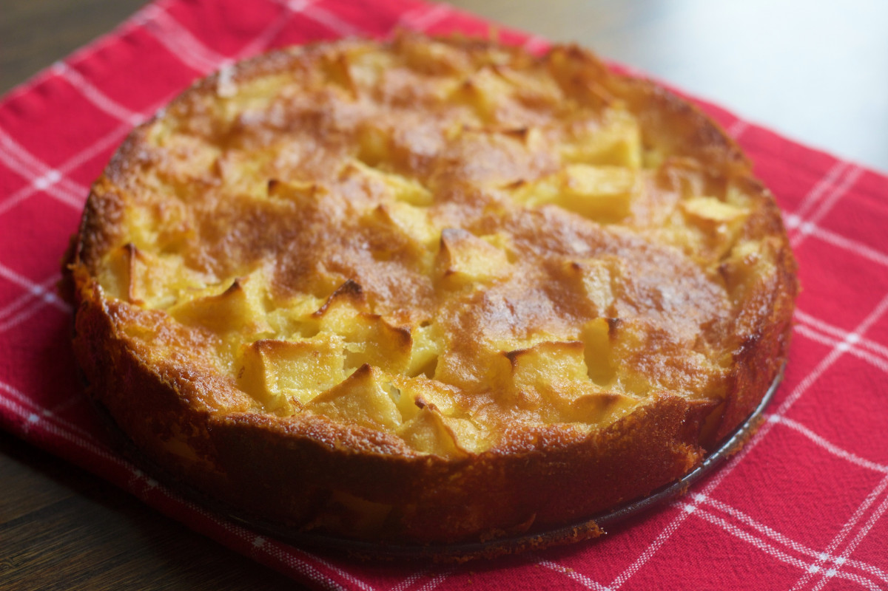

Cinnamon Apple Cake

Description
A soft apple cake with a crunchy cinnamon topping.
Ingredients
Apple cake
- 1 and 1/2 cups plain flour
- 2 teaspoons baking powder
- 1/2 teaspoon baking soda
- 1/4 teaspoon salt
- 3/4 cup granulated sugar
- 1 large red apple, peeled and chopped
- 2 large eggs
- 1 teaspoon vanilla sugar
- 1/2 cup vegetable oil
- 1/2 cup kefir
Cinnamon topping
- 1/4 cup granulated sugar
- 1 teaspoon ground cinnamon
- 1 tablespoon butter, melted
Steps
- Preheat oven to 180 C(160 C fan-forced). Grease and line an round baking pan with parchment paper.
- In a large bowl, mix flour, baking powder, baking soda, salt and sugar. Add chopped apple and combine.
- In a medium bowl, add eggs, vanilla sugar, oil and kefir. Whisk briefly.
- Add the contents of the medium bowl to the large bowl. Mix until combined. Transfer into the baking pan.
- Combine sugar, cinnamon and butter to create cinnamon topping. Sprinkle on top of the batter.
- Bake for 30-35 minutes. Transfer out of the baking pan and let cool completely.
Homepage